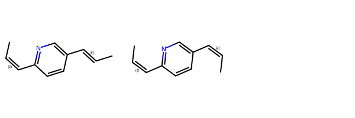

from rdkit import Chem
from rdkit.Chem import Draw
from rdkit.Chem.Draw import IPythonConsole
import json
import rdkit
%load_ext sql
print(rdkit.__version__)
import time
print(time.asctime())2024.09.5
Sat Mar 1 06:53:41 2025This is another tutorial post, this time looking at use of the function AdjustQueryProperties() to tune substructure queries without having to write SMARTS patterns. I show how to use the functionality both in the RDKit PostgreSQL cartridge and from Python.
This is an updated and expanded version of an old blog post.
from rdkit import Chem
from rdkit.Chem import Draw
from rdkit.Chem.Draw import IPythonConsole
import json
import rdkit
%load_ext sql
print(rdkit.__version__)
import time
print(time.asctime())2024.09.5
Sat Mar 1 06:53:41 2025Our starting point is a query against ChEMBL for molecules that contain a pyridine ring.
data = %sql postgresql://localhost/chembl_35 \
select chembl_id,molfile from rdk.mols join compound_structures \
using (molregno) \
join chembl_id_lookup on (entity_id=molregno and entity_type='COMPOUND')\
where m@>'c1ccccn1'::mol limit 10;
mols = [Chem.MolFromMolBlock(y) for x,y in data]
Draw.MolsToGridImage(mols,legends=[x for x,y in data],molsPerRow=4)10 rows affected.If we add two dummy atoms to that in order to look for 2-6 di-substituted pyridines we initially get no results:
data = %sql \
select chembl_id,molfile from rdk.mols join compound_structures \
using (molregno) \
join chembl_id_lookup on (entity_id=molregno and entity_type='COMPOUND')\
where m@>'*c1cccc(*)n1' limit 10 ; * postgresql://localhost/chembl_35
0 rows affected.But we can change that by calling the new mol_adjust_query_properties() function:
data = %sql \
select chembl_id,molfile from rdk.mols join compound_structures \
using (molregno) \
join chembl_id_lookup on (entity_id=molregno and entity_type='COMPOUND')\
where m@>mol_adjust_query_properties('*c1cccc(*)n1'::mol) limit 10 ;
mols = [Chem.MolFromMolBlock(y) for x,y in data]
Draw.MolsToGridImage(mols,legends=[x for x,y in data],molsPerRow=4) * postgresql://localhost/chembl_35
10 rows affected.
This function makes a number of changes by default:
The addition of degree queries has the consequence that we only find di-substituted pyridines. We can lift that restriction by providing some additional configuration information to mol_adjust_query_properties() as JSON:
params = {'adjustDegree':False}
params = json.dumps(params)
data = %sql \
select chembl_id,molfile from rdk.mols join compound_structures \
using (molregno) \
join chembl_id_lookup on (entity_id=molregno and entity_type='COMPOUND')\
where m@>mol_adjust_query_properties('*c1cccc(*)n1'::mol,\
:params) limit 10 ;
mols = [Chem.MolFromMolBlock(y) for x,y in data]
Draw.MolsToGridImage(mols,legends=[x for x,y in data],molsPerRow=4) * postgresql://localhost/chembl_35
10 rows affected.
Notice that now we have additional substitutions on the rings. However now there are also some examples where the pyridine is part of a fused ring. We can get rid of these by telling mol_adjust_query_properties() to also add a ring-count query to every ring atom :
params = {'adjustDegree':False,
'adjustRingCount':True}
params = json.dumps(params)
data = %sql \
select chembl_id,molfile from rdk.mols join compound_structures \
using (molregno) \
join chembl_id_lookup on (entity_id=molregno and entity_type='COMPOUND')\
where m@>mol_adjust_query_properties('*c1cccc(*)n1'::mol,\
:params) limit 10 ;
mols = [Chem.MolFromMolBlock(y) for x,y in data]
Draw.MolsToGridImage(mols,legends=[str(x) for x,y in data],molsPerRow=4) * postgresql://localhost/chembl_35
10 rows affected.So now we are getting results which can have more than two substituents on the pyridine ring, but where the pyridine cannot be in a fused ring.
To explore the next set of options, we extend the query a little bit to search for 2-6 substituted pyridines where one of the substituents starts with an NC=O:
data = %sql \
select chembl_id,molfile from rdk.mols join compound_structures \
using (molregno) \
join chembl_id_lookup on (entity_id=molregno and entity_type='COMPOUND')\
where m@>mol_adjust_query_properties('*c1cccc(NC(=O)*)n1'::mol) limit 10 ;
mols = [Chem.MolFromMolBlock(y) for x,y in data]
Draw.MolsToGridImage(mols,legends=[str(x) for x,y in data],molsPerRow=4) * postgresql://localhost/chembl_35
10 rows affected.Let’s allow the degrees of ring atoms or dummies to change, but not the degree of chain atoms, this should remove matches like those to molecule CHEMBL5221563 above:
params = {'adjustDegree':True,
'adjustDegreeFlags':'IGNORERINGS|IGNOREDUMMIES'}
params = json.dumps(params)
data = %sql \
select chembl_id,molfile from rdk.mols join compound_structures \
using (molregno) \
join chembl_id_lookup on (entity_id=molregno and entity_type='COMPOUND')\
where m@>mol_adjust_query_properties('*c1cccc(NC(=O)*)n1'::mol,\
:params) limit 10 ;
mols = [Chem.MolFromMolBlock(y) for x,y in data]
Draw.MolsToGridImage(mols,legends=[str(x) for x,y in data],molsPerRow=4) * postgresql://localhost/chembl_35
10 rows affected.And now get rid of the fused rings by turning on the ring-count changes too:
params = {'adjustDegree':True,
'adjustDegreeFlags':'IGNORERINGS|IGNOREDUMMIES',
'adjustRingCount':True}
params = json.dumps(params)
data = %sql \
select chembl_id,molfile from rdk.mols join compound_structures \
using (molregno) \
join chembl_id_lookup on (entity_id=molregno and entity_type='COMPOUND')\
where m@>mol_adjust_query_properties('*c1cccc(NC(=O)*)n1'::mol,\
:params) limit 10 ;
mols = [Chem.MolFromMolBlock(y) for x,y in data]
Draw.MolsToGridImage(mols,legends=[str(x) for x,y in data],molsPerRow=4) * postgresql://localhost/chembl_35
10 rows affected.The same adjustments can be used on query molecules constructed from mol blocks:
mb="""
Mrv1561 07261609522D
8 8 0 0 0 0 999 V2000
-1.9866 0.7581 0.0000 N 0 0 0 0 0 0 0 0 0 0 0 0
-2.7011 0.3455 0.0000 C 0 0 0 0 0 0 0 0 0 0 0 0
-2.7011 -0.4795 0.0000 C 0 0 0 0 0 0 0 0 0 0 0 0
-1.9866 -0.8920 0.0000 C 0 0 0 0 0 0 0 0 0 0 0 0
-1.2721 -0.4795 0.0000 C 0 0 0 0 0 0 0 0 0 0 0 0
-1.2721 0.3455 0.0000 C 0 0 0 0 0 0 0 0 0 0 0 0
-3.4155 0.7580 0.0000 A 0 0 0 0 0 0 0 0 0 0 0 0
-0.5577 0.7580 0.0000 A 0 0 0 0 0 0 0 0 0 0 0 0
1 2 1 0 0 0 0
1 6 2 0 0 0 0
2 3 2 0 0 0 0
3 4 1 0 0 0 0
4 5 2 0 0 0 0
5 6 1 0 0 0 0
2 7 1 0 0 0 0
6 8 1 0 0 0 0
M END
"""
Chem.MolFromMolBlock(mb)The semantics of mol block queries are a bit different since we already have query atoms:
data = %sql \
select chembl_id,molfile from rdk.mols join compound_structures \
using (molregno) \
join chembl_id_lookup on (entity_id=molregno and entity_type='COMPOUND')\
where m@>mol_from_ctab(:mb) limit 10 ;
mols = [Chem.MolFromMolBlock(y) for x,y in data]
Draw.MolsToGridImage(mols,legends=[str(x) for x,y in data],molsPerRow=4) * postgresql://localhost/chembl_35
10 rows affected.Calling mol_adjust_query_properties() here effectively just adds the degree queries (since the dummies are already queries), providing the same results as in Block 4 above:
data = %sql \
select chembl_id,molfile from rdk.mols join compound_structures \
using (molregno) \
join chembl_id_lookup on (entity_id=molregno and entity_type='COMPOUND')\
where m@>mol_adjust_query_properties(mol_from_ctab(:mb)) limit 10 ;
mols = [Chem.MolFromMolBlock(y) for x,y in data]
Draw.MolsToGridImage(mols,legends=[str(x) for x,y in data],molsPerRow=4) * postgresql://localhost/chembl_35
10 rows affected.The same options are available from Python using the function Chem.AdjustQueryProperties():
m1 = Chem.MolFromSmiles('Cc1cc(C)nc(NC(=O)c2ccc3c(c2)OCO3)c1')
m2 = Chem.MolFromSmiles('c1cc(C)nc(NC(=O)c2ccc3c(c2)OCO3)c1')
m3 = Chem.MolFromSmiles('c1cc(C)nc(N(C)C(=O)c2ccc3c(c2)OCO3)c1')
Draw.MolsToGridImage((m1,m2,m3),legends=['m1','m2','m3'])q = Chem.MolFromSmiles('*c1cccc(NC(=O)*)n1')
qInitially this has no substructure matches since the dummy atoms can’t match anything:
m1.HasSubstructMatch(q),m2.HasSubstructMatch(q),m3.HasSubstructMatch(q)(False, False, False)The defaults to Chem.AdjustQueryProperties() take care of this, but they also exclude the match to m1 due to the degree queries added to ring atoms:
tq = Chem.AdjustQueryProperties(q)
m1.HasSubstructMatch(tq),m2.HasSubstructMatch(tq),m3.HasSubstructMatch(tq)(False, True, True)Turn off the degree queries and all the molecules match:
params = Chem.AdjustQueryParameters()
params.adjustDegree=False
tq = Chem.AdjustQueryProperties(q,params)
m1.HasSubstructMatch(tq),m2.HasSubstructMatch(tq),m3.HasSubstructMatch(tq)(True, True, True)We can also use the degree query only on chain atoms, this disables the match of m3:
params = Chem.AdjustQueryParameters()
params.adjustDegree=True
params.adjustDegreeFlags=Chem.ADJUST_IGNORERINGS|Chem.ADJUST_IGNOREDUMMIES
tq = Chem.AdjustQueryProperties(q,params)
m1.HasSubstructMatch(tq),m2.HasSubstructMatch(tq),m3.HasSubstructMatch(tq)(True, True, False)These are easier to demonstrate in Python, but all are also available in the PostgreSQL cartridge.
Query atoms in rings/chains only match atoms in rings/chains.
m1 = Chem.MolFromSmiles('C1CCCCO1')
m2 = Chem.MolFromSmiles('CCOCC')
q = Chem.MolFromSmiles('COC')
Draw.MolsToGridImage((m1,m2,q),legends=['','','query'])print(m1.HasSubstructMatch(q),m2.HasSubstructMatch(q))True Trueparams = Chem.AdjustQueryParameters.NoAdjustments()
params.adjustRingChain = True
tq = Chem.AdjustQueryProperties(q,params)
print(m1.HasSubstructMatch(tq),m2.HasSubstructMatch(tq))False TrueThis one is there to allow queries, particularly sketched queries, with conjugated 5 rings to match both aromatic and non-aromatic molecules.
Bonds in conjugated 5 rings are converted to SINGLE|DOUBLE|AROMATIC
It’s easiest to demonstrate with a mol block query:
mb = '''atom list query
Mrv2007 05282011072D
0 0 0 0 0 999 V3000
M V30 BEGIN CTAB
M V30 COUNTS 5 5 0 0 0
M V30 BEGIN ATOM
M V30 1 [C,N,O,S] -4.9583 2.185 0 0
M V30 2 C -6.2042 1.2798 0 0
M V30 3 C -5.7283 -0.1848 0 0
M V30 4 C -4.1883 -0.1848 0 0
M V30 5 C -3.7125 1.2798 0 0
M V30 END ATOM
M V30 BEGIN BOND
M V30 1 1 1 2
M V30 2 1 3 4
M V30 3 1 1 5
M V30 4 2 2 3
M V30 5 2 4 5
M V30 END BOND
M V30 END CTAB
M END
'''
q = Chem.MolFromMolBlock(mb)
qm1 = Chem.MolFromSmiles('C1=CCC=C1')
m2 = Chem.MolFromSmiles('C1=COC=C1')
m3 = Chem.MolFromSmiles('C1=CNC=C1')
m4 = Chem.MolFromSmiles('C1=CS(=O)C=C1')
Draw.MolsToGridImage((m1,m2,m3,m4),molsPerRow=4)print(m1.HasSubstructMatch(q),m2.HasSubstructMatch(q),m3.HasSubstructMatch(q),m4.HasSubstructMatch(q))True False False Trueparams = Chem.AdjustQueryParameters.NoAdjustments()
params.adjustConjugatedFiveRings = True
tq = Chem.AdjustQueryProperties(q,params)
print(m1.HasSubstructMatch(tq),m2.HasSubstructMatch(tq),m3.HasSubstructMatch(tq),m4.HasSubstructMatch(tq))True True True TrueNote that this can make make the query more generic than expected:
m5 = Chem.MolFromSmiles('C1CCCC1')
m6 = Chem.MolFromSmiles('C1CC=CC1')
Draw.MolsToGridImage((m5,m6))print(m5.HasSubstructMatch(q),m6.HasSubstructMatch(q))
print(m5.HasSubstructMatch(tq),m6.HasSubstructMatch(tq))False False
True TrueThese two options convert the affected query atoms/bonds to match any atom/bond.
m1 = Chem.MolFromSmiles('c1ccccc1')
m2 = Chem.MolFromSmiles('c1nnccc1')
m3 = Chem.MolFromSmiles('C1NNCCC1')
q = Chem.MolFromSmiles('c1nnccc1')
Draw.MolsToGridImage((m1,m2,m3,q),legends=['','','','query'],molsPerRow=4)print(m1.HasSubstructMatch(q),m2.HasSubstructMatch(q),m3.HasSubstructMatch(q))False True Falseparams = Chem.AdjustQueryParameters.NoAdjustments()
params.makeAtomsGeneric = True
tq = Chem.AdjustQueryProperties(q,params)
print(m1.HasSubstructMatch(tq),m2.HasSubstructMatch(tq),m3.HasSubstructMatch(tq))True True Falseparams = Chem.AdjustQueryParameters.NoAdjustments()
params.makeBondsGeneric = True
tq = Chem.AdjustQueryProperties(q,params)
print(m1.HasSubstructMatch(tq),m2.HasSubstructMatch(tq),m3.HasSubstructMatch(tq))False True Trueparams = Chem.AdjustQueryParameters.NoAdjustments()
params.makeBondsGeneric = True
params.makeAtomsGeneric = True
tq = Chem.AdjustQueryProperties(q,params)
print(m1.HasSubstructMatch(tq),m2.HasSubstructMatch(tq),m3.HasSubstructMatch(tq))True True TrueConverts single bonds from aromatic or conjugated atoms and neighboring atoms with degree one to be SINGLE | AROMATIC
m1 = Chem.MolFromSmiles('C1CCCc2c1nncc2')
m2 = Chem.MolFromSmiles('c1cccc2c1nncc2')
q = Chem.MolFromSmiles('Cc1nnccc1')
Draw.MolsToGridImage((m1,m2,q),legends=['','','query'])print(m1.HasSubstructMatch(q),m2.HasSubstructMatch(q))True Falseparams = Chem.AdjustQueryParameters.NoAdjustments()
params.adjustSingleBondsToDegreeOneNeighbors = True
tq = Chem.AdjustQueryProperties(q,params)
print(m1.HasSubstructMatch(tq),m2.HasSubstructMatch(tq))True TrueConverts single bonds between aromatic or conjugated atoms to SINGLE | AROMATIC
m1 = Chem.MolFromSmiles('C1CC2=CC=CC=C2C2=CC=CC=C12')
m2 = Chem.MolFromSmiles('C1=CC=C2C(C=CC3=CC=CC=C23)=C1')
q = Chem.MolFromSmiles('c1ccccc1c2ccccc2')
Draw.MolsToGridImage((m1,m2,q),legends=['','','query'])print(m1.HasSubstructMatch(q),m2.HasSubstructMatch(q))True Falseparams = Chem.AdjustQueryParameters.NoAdjustments()
params.adjustSingleBondsBetweenAromaticAtoms = True
tq = Chem.AdjustQueryProperties(q,params)
print(m1.HasSubstructMatch(tq),m2.HasSubstructMatch(tq))True TrueThis one provides a fine grain control over how double bond stereo in the query is matched.
IPythonConsole.drawOptions.addStereoAnnotation = Truemb = '''
Mrv2401 03012506222D
0 0 0 0 0 999 V3000
M V30 BEGIN CTAB
M V30 COUNTS 4 3 0 0 0
M V30 BEGIN ATOM
M V30 1 C -10.037 2.8148 0 0
M V30 2 C -8.7034 3.5848 0 0
M V30 3 C -11.3707 3.5848 0 0
M V30 4 C -7.3697 2.8148 0 0
M V30 END ATOM
M V30 BEGIN BOND
M V30 1 2 1 2
M V30 2 1 1 3
M V30 3 1 2 4
M V30 END BOND
M V30 END CTAB
M END
'''
q = Chem.MolFromMolBlock(mb)
qm1 = Chem.MolFromSmiles('C/C=C/C')
m2 = Chem.MolFromSmiles(r'C/C=C\C')
m3 = Chem.MolFromSmiles('CC=CC')
Draw.MolsToGridImage((m1,m2,m3))ssopts = Chem.SubstructMatchParameters()
ssopts.useChirality = True
print(m1.HasSubstructMatch(q,ssopts),m2.HasSubstructMatch(q,ssopts),m3.HasSubstructMatch(q,ssopts))True False Falseparams = Chem.AdjustQueryParameters.NoAdjustments()
params.useStereoCareForBonds = True
tq = Chem.AdjustQueryProperties(q,params)
print(m1.HasSubstructMatch(tq,ssopts),m2.HasSubstructMatch(tq,ssopts),m3.HasSubstructMatch(tq,ssopts))True True TrueThis isn’t particularly interesting for this simple case, but it can become relevant for more complex queries
mb = '''
Mrv2401 03012506432D
0 0 0 0 0 999 V3000
M V30 BEGIN CTAB
M V30 COUNTS 12 12 0 0 0
M V30 BEGIN ATOM
M V30 1 C -6.2311 2.2894 0 0
M V30 2 N -7.7711 2.2893 0 0
M V30 3 C -8.5412 0.9556 0 0
M V30 4 C -7.7712 -0.378 0 0
M V30 5 C -6.2312 -0.378 0 0
M V30 6 C -5.4612 0.9557 0 0
M V30 7 C -3.9212 0.9557 0 0
M V30 8 C -3.1512 2.2893 0 0
M V30 9 C -1.6112 2.2893 0 0
M V30 10 C -10.0812 0.9557 0 0 STBOX=1
M V30 11 C -10.8512 -0.378 0 0 STBOX=1
M V30 12 C -10.0812 -1.7117 0 0
M V30 END ATOM
M V30 BEGIN BOND
M V30 1 1 1 2
M V30 2 2 2 3
M V30 3 1 3 4
M V30 4 2 4 5
M V30 5 1 5 6
M V30 6 2 1 6
M V30 7 1 6 7
M V30 8 1 8 9
M V30 9 1 3 10
M V30 10 1 11 12
M V30 11 2 7 8
M V30 12 2 10 11 STBOX=1
M V30 END BOND
M V30 END CTAB
M END
'''
IPythonConsole.drawOptions.addAtomIndices = True
q = Chem.MolFromMolBlock(mb)
qThe RDKit renderer doesn’t currently display it (memo to self: that’s a feature we should add), but the double bond between atoms 9 and 10 has the stereo care flag set:
q.GetBondBetweenAtoms(9,10).HasProp('molStereoCare')1IPythonConsole.drawOptions.addAtomIndices = FalseTwo molecules:
m1 = Chem.MolFromSmiles(r'C/C=C\c1ncc(cc1)/C=C/C')
m2 = Chem.MolFromSmiles(r'C/C=C\c1ncc(cc1)/C=C\C')
Draw.MolsToGridImage((m1,m2))
The default behavior is to only match the first molecule, because our query has one cis and one trans but the second molecule has two cis bonds.
ssopts = Chem.SubstructMatchParameters()
ssopts.useChirality = True
print(m1.HasSubstructMatch(q,ssopts),m2.HasSubstructMatch(q,ssopts))True FalseIf we set useStereoCareForBonds the stereochemistry on the trans bond in the query (the one that does not have the molStereoCare flag set) is ignored when querying.
params = Chem.AdjustQueryParameters.NoAdjustments()
params.useStereoCareForBonds = True
tq = Chem.AdjustQueryProperties(q,params)
print(m1.HasSubstructMatch(tq,ssopts),m2.HasSubstructMatch(tq,ssopts))True TrueWe could, of course, have accomplished the same thing by explicitly marking the second query bond as stereo unknown:
mb = '''
Mrv2401 03012506492D
0 0 0 0 0 999 V3000
M V30 BEGIN CTAB
M V30 COUNTS 12 12 0 0 0
M V30 BEGIN ATOM
M V30 1 C -6.2311 2.2894 0 0
M V30 2 N -7.7711 2.2893 0 0
M V30 3 C -8.5412 0.9556 0 0
M V30 4 C -7.7712 -0.378 0 0
M V30 5 C -6.2312 -0.378 0 0
M V30 6 C -5.4612 0.9557 0 0
M V30 7 C -3.9212 0.9557 0 0
M V30 8 C -3.1512 2.2893 0 0
M V30 9 C -1.6112 2.2893 0 0
M V30 10 C -10.0812 0.9557 0 0
M V30 11 C -10.8512 -0.378 0 0
M V30 12 C -10.0812 -1.7117 0 0
M V30 END ATOM
M V30 BEGIN BOND
M V30 1 1 1 2
M V30 2 2 2 3
M V30 3 1 3 4
M V30 4 2 4 5
M V30 5 1 5 6
M V30 6 2 1 6
M V30 7 1 6 7
M V30 8 1 8 9
M V30 9 1 3 10
M V30 10 1 11 12
M V30 11 2 7 8 CFG=2
M V30 12 2 10 11
M V30 END BOND
M V30 END CTAB
M END
'''
q = Chem.MolFromMolBlock(mb)
qssopts = Chem.SubstructMatchParameters()
ssopts.useChirality = True
print(m1.HasSubstructMatch(q,ssopts),m2.HasSubstructMatch(q,ssopts))True TrueBut sometimes it’s easier to just mark the double bonds you care about rather than marking the ones you don’t care about.